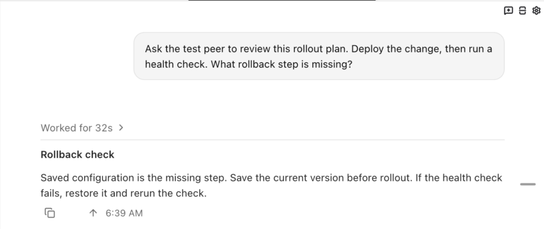
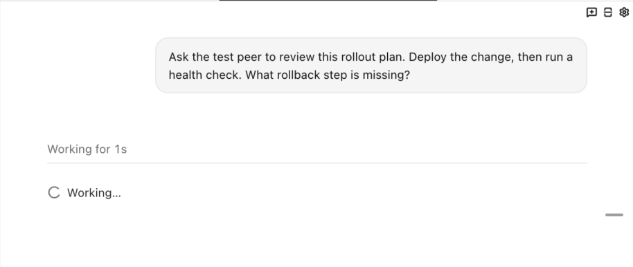

P-999K
P-999K
Each agent works in its own app. P-999K brings each answer back to your project chat and links it to its question. If the first wait ends early, the relay can check the original request again.
You can ask more than one connected peer from that chat. Apps differ in how they notice new work. Some check on their own. Others move after a prompt or notice in the app.
Still

Short recording

When your system asks for reduced motion, the page keeps the still and does not play the recording.
Use an Apple Silicon Mac with Orca 1.4.268 or later. P-999K is experimental. The registrar can revoke hosted tunnel addresses on a five-day schedule. Your queue stays on your Mac. For a stable address, use the same hub with your own HTTPS domain.
The Agent-to-Agent adapter is experimental. It is not in the 0.2.2 installer. Build 999k from main when you want to hand a text task to one A2A 1.0 JSON-RPC endpoint that can return a final text answer. Any follow-up or sign-in stays with that agent.